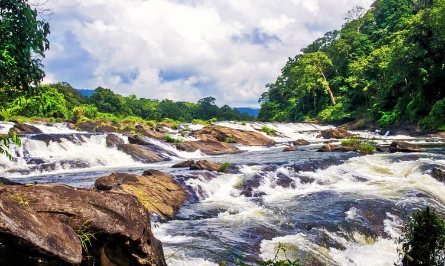

The fourth largest city in Kerala, Thrissur or Trichur is the ‘Cultural Capital’ of God’s Own Country. The once a capital of the Kingdom of Cochin, this metropolis is a plethora of history, rustic cultures, devout beliefs, and colourful traditions.
Known to be one of the most pious tourist destinations in Kerala, this scenic city is dotted with pious temples, and is a home to some of the most gala festivals in the entire state. The city also serves as an ideal destination to learn Hindu religion.
Tracing back the history of Thrissur, it has been found that the city was one of the earliest human settlements in the country. Researchers and historians got evidences of early human settlements around sites like Ramavarmapuram, Kuttoor, Cherus, and Villadam. Trichur also served as an important trade centre during the medieval period, and was ruled by the Dutch rulers, Hyder Ali, Tipu Sultan, East India Company, and finally came to the hands of the Indian Government.
If you are planning a Kerala trip or a visit to this glorious city, plan it during the Medam month of Malayalam calendar. During this month, the entire city gathers together to celebrate the holy and equally glamorous festival of Thrissur Pooram. You can witness an array of indigenous cultures, traditions, and mystical beliefs during this celebration. Adding more to the charm and frolic of Thrissur Pooram, there is a kaleidoscopic procession of decorated elephants that is attended by a large number of devotees, national and international tourists!
Top Desinations
Athirappilly Waterfalls
On the outskirts of the city at a distance of some 60 km, the Athirappilly waterfalls mark one of the best places to visit in Thrissur. Standing 80 ft tall and about 330 ft wide, these falls are the largest in the state of Kerala.
The majesty of this place can be understood by the fact that the falls are located on the Chalakudy River, that originates from the highest mountain in India outside of the Himalayas. A perfect place for a group outing, these falls are sometimes called the Niagra of India
Location: 57.8 km from Thrissur bus stand.
Timings: Everyday, 8 AM to 6 PM.
Entry fees: INR 15 per person.
Vadakkunnathan Temple
An ancient temple of Kerala, the Vadakkunnathan Temple is also the oldest temple of the state dedicated to Lord Shiva. Following the architectural style of Kerala, the temple has monumental towers surrounding it.
Talking about the inside of the temple, there are several mural paintings that depict various episodes from the Hindu Epic, Mahabharata.
Thekkinkadu Maidan, which surrounds the temple from all sides is where the local festival of Thrissur Pooram is organized every year, granting this place an even more of spiritual importance.
Location: 2.4 km from Thrissur bus stand.
Timings: Everyday, 3 AM to 8:30 PM.
Kerala Kalamandalam
A University of Art and Culture, Kerala Kalamandir is a Government of India recognized institution dedicated to providing learning in the many performing arts native to India. Their main focus has always been on the arts that have been developed in Southern India.
The Kerala Kalamandalam was what gave three main arts of Kerala a new life, namely Kathakali, Kudiyattam, and Mohiniyattam. For the sake of performing arts, and if you are someone who is a fanatic for them, this is definitely the place to be. The best part is that the institute is housed on the banks of the Bharathapuzha River.
location: 30.9 km from Thrissur bus stand.
Timings: Everyday, 9 AM to 5 AM.
Vazhachal Falls

Another great waterfall located in the Athirappilly region of Thrissur, the Vazhachal Waterfall has located just 5 km from the famous Athirappilly waterfalls.
The milky colour of the water is what really attracts visitors from all over to come and witness the majesty of the falls situated on the west flowing Chalakudy River.
Owing to the beauty and the nature of this location, there are a lot of water parks and natural gardens nearby, which combined make monsoons the best time to visit this place.
Location: 32 km from Thrissur bus stand.
Timings: Everyday, 8 AM to 6 PM.